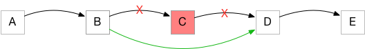

{% extends "../_base_template.html" %}
{% block title %}Lektion 4 - Linked Lists{% endblock %}

{% block sections %}
<section data-markdown >
<textarea data-template>
<i class="fas fa-graduation-cap"></i> Lektion 4 - Linked Lists
=============================

Ziel der Lektion:

* Sie verstehen den Aufbau einer Linked List
* Sie können eine Linked List in Java selber programmieren
* Sie können gängige Operationen / Methoden von LinkedLists implementieren
</textarea>
</section>

<section data-markdown >
<textarea data-template>
<i class="fas fa-graduation-cap"></i> Hausaufgaben - Implementation der List-Methoden
=============================

Wir schauen uns die Implementationen der List-Funktionen an:

* **`append()`**
* **`printList()`**
* **`find()`**
* ... weitere?

</textarea>
</section>

<section>
<section data-markdown >
<textarea data-template>
<i class="fas fa-graduation-cap"></i> Intermezzo - Vergleich mit Array-Operationen
=============================

Rufen sie sich nochmals die folgenden Funktionen ins Gedächtnis:

* `append()`
* `insert()`
* `remove()`

Fragen:
* Können Sie diese ohne Weiteres mit Arrays implementieren?
* Wo liegt der grosse Unterschied zu Listen, wenn Sie diese Methoden mit Arrays implementieren müssen?
* Wie gross ist der rechnerische Aufwand in den beiden Datenstrukturen, um diese beiden Operationen durchzuführen?
</textarea>
</section>

<section data-markdown >
<textarea data-template>
<i class="fas fa-graduation-cap"></i> Intermezzo - Vergleich mit Array-Operationen
=============================

Erinnern wir uns an die Einführungslektion:

**Arrays sind:**

* ineffizient, wenn man nicht genau weiss, wieviele Elemente zu speichern sind
* ineffizient, wenn man einzelne Elemente einfügen oder entfernen muss
* effizient, wenn man auf beliebige Elemente zugreifen muss

**Listen sind:**

* effizient, wenn man nicht genau weiss, wieviele Elemente zu speichern sind
* effizient, wenn man einzelne Elemente einfügen oder entfernen muss
* ineffizient, wenn man auf beliebige Elemente zugreifen muss


<i class="far fa-hand-point-right"></i> Wir halten also fest:

* Einfüge- und Verschiebe-Operationen in **Listen** sind **billig** (in Rechenzeit)
* Einfüge- und Verschiebe-Operationen in **Arrays** sind **teuer** (in Rechenzeit)
* Direktzugriff auf eine bestimmte Position in **Listen** ist **teuer** (in Rechenzeit)
* Direktzugriff auf eine bestimmte Position in **Arrays** ist **billig** (in Rechenzeit)


<i class="far fa-hand-point-right"></i> Wir müssen also genau überlegen, welche Datenstruktur wir für unser Problem verwenden -
Listen wie auch Arrays sind nicht für alle Problemstellungen gleich gut geeignet!

Wir beschäftigen uns später im Modul noch genauer mit der Effizienz von Algorithmen.
</textarea>
</section>
</section>

<section>
<section data-markdown >
<textarea data-template>
<i class="fas fa-graduation-cap"></i> Denksport-Aufgabe: Schnelles anhängen
=============================

Eine Eigenschaft der Linked Lists ist ja, dass **Einfügen schnell sein soll** - Stimmt dies für unsere `List.append()`-Methode?

* Wie lange dauert das Anhängen mit `append` bei einer leeren Liste?
* Wie lange dauert das Anhängen mit `append` bei einer Listen-Grösse von 10 Elementen?
* ... von 1'000 Elementen?
* ... von 10'000 Elementen?
* ... von 100'000 Elementen?
* ... von 1'000'000 Elementen?

Wir führen ein kleines Zeit-Mess-Experiment durch: Setzen Sie folgendes um:

```java
// Wir halten 'jetzt' als Nanosekunden fest:
long start = System.nanoTime();

// Wieviele Einträge?
int entries = 1000;
        
// Füllen!
LinkedList<Integer> liste = new LinkedList<>();
for (int i = 0; i < entries; i++ ) {
    liste.append(i);
}

// benötigte Zeit ermitteln:
long end = System.nanoTime();
System.out.println("Took seconds: " + (end - start)/1000.0/1000.0/1000.0);
```

<i class="far fa-hand-point-right"></i> Ist das nun besser, als mit einem Array?
</textarea>
</section>

<section data-markdown >
<textarea data-template>
<i class="fas fa-graduation-cap"></i> Denksport-Aufgabe: Schnelles anhängen
=============================

<i class="far fa-hand-point-right"></i> Hier haben wir also ein Problem! Unsere Liste ist gar nicht schnell!
Je länger die Liste wird, desto langsamer wird das Anfügen! Das ist ja wie bei Arrays!

Dagegen müssen wir etwas tun.

**Finden Sie eine Lösung für das Problem**: 

**Das Anfügen eines Elementes soll immer gleich schnell gehen**,
egal, wie lange die Liste ist!

<i class="far fa-hand-point-right"></i> Entwickeln Sie in den nächsten Minuten eine mögliche Lösung,
und stellen Sie diese den Anderen vor:

* Wie können Sie `LinkedList` anpassen, damit das Einfügen immer gleich schnell geht?
* Was ist der Nachteil Ihrer neuen Lösung?

</textarea>
</section>
</section>

<section>
<section data-markdown >
<textarea data-template>
<i class="fas fa-graduation-cap"></i> Weitere Methoden für die Liste
=============================

Wir können nun bereits Elemente einfügen und suchen. Um die Liste in der Praxis benutzen zu können,
braucht es noch ein paar Methoden mehr.

**Implementation von insert(), remove() und move()** (Moodle-Aufgabe)

Diejenigen, die diese Aufgabe noch nicht gemacht haben, implementieren `insert()`, `remove()`, und `move()`.
Siehe Moodle-Aufgabe von letzer Wochen.

**Optimierung von remove()** (Moodle-Aufgabe)

`remove()` hat ein ähnliches Problem wie `append()`: Um eine Node zu löschen, muss die **Vorgänger-Node**
ermittelt und der next-Pointer umgehängt werden:



Um Node "C" zu entfernen, muss `B.next` umgehängt werden. Dazu muss aber die Node `B` erst gefunden werden:
Bei unserer einfachen `LinkedList`-Implementation kennt Node `C` leider den Vorgänger nicht.

<i class="far fa-hand-point-right"></i> Wie können Sie dieses Problem lösen, sodass das Entfernen ebenfalls
immer gleich schnell funktioniert? Implementieren Sie eine mögliche Lösung!

</textarea>
</section>

<section data-markdown >
<textarea data-template>
<i class="fas fa-graduation-cap"></i> Weitere Methoden für die Liste
=============================

Folgende Szenarien kommen in der Praxis viel vor:

* Sie möchten wissen, **wieviele Elemente** ihre Liste beinhaltet
* Sie möchten die Liste **leeren**
* Sie möchten Elemente in der Liste **vertauschen** (z.B. zum Sortieren)
* Sie möchten Elemente an einer **bestimmten Position** (Index) auslesen / setzen


Dies führt zu folgenden zusätzlichen Methoden für unsere `LinkedList`-Klasse:
z.B.:

* eine **`count()`**-Methode, welche die Anzahl Elemente zurückgibt
* eine **`clear()`**-Methode, welche alle Nodes in der Liste entfernt
* eine **`swap(Node1, Node2)`**-Methode, welche den Wert1 mit dem Wert2 vertauscht
* eine **`getAt(index)`** und eine **`setAt(index, Wert)`**-Methode, um Werte an Position `index` zu lesen/setzen

<i class="far fa-hand-point-right"></i> Implementieren Sie diese Methoden in der LinkedList-Klasse!

</textarea>
</section>

<section data-markdown >
<textarea data-template>
<i class="fas fa-graduation-cap"></i> Bonusthema: Suchen von komplexen Daten
=============================

Wir haben in unserer Liste bereits eine `find(T Wert)`-Methode, mit der wir eine `ListNode` zu einem zugehörigen Wert finden können:

```java
LinkedList<&#8203;Integer> list = new LinkedList<&#8203;>();
list.append(5); list.append(8); list.append(12); list.append(13); list.append(42);

ListNode<&#8203;T> found = list.find(8);
```

Das ist schön, nur: **in der Praxis haben wir selten nur Zahlen in unserer Liste**: Unsere Liste enthält vielleicht Objekte der Klasse `Person`:

```java
class Person {
    public String name;
    public String vorname;
    public Person(String name, String vorname) { this.name = name; this.vorname = vorname}
}

LinkedList<&#8203;Person> list = new LinkedList<&#8203;>();
list.append(new Person("Schenkel", "Alex"));
list.append(new Person("Duck", "Donald"));
list.append(new Person("Legend", "John"));
```

<i class="far fa-hand-point-right"></i> Unsere find()-Methode ist darauf nicht vorbereitet: sie vergleicht einfach den Wert, hier also z.B.
die Referenz. **Ich möchte aber nach einem bestimmten Nachnamen suchen können!**

Da unsere Liste "Typen-agnostisch" ist (unsere Liste weiss nichts von Personen und Namen), kann unsere Liste also nicht nach Nachnamen suchen...

<i class="far fa-hand-point-right"></i> **Wir müssen unserer find()-Methode also beibringen, wie sie Nachnamen vergleichen kann!**

(nächste Folie)
</textarea>
</section>

<section data-markdown >
<textarea data-template>
<i class="fas fa-graduation-cap"></i> Bonusthema: Suchen von komplexen Daten (forts.)
=============================

<i class="far fa-hand-point-right"></i> **Wir müssen unserer find()-Methode also beibringen, wie sie Nachnamen vergleichen kann!**

Wir können unserer find-Methode eine Vergleichs-Methode "mit auf den Weg" geben: Java liefert uns dazu das Werkzeug in Form
von so genannten "Functional Interfaces" (https://docs.oracle.com/javase/8/docs/api/java/util/function/package-summary.html):

Mit dem Interface `Predicate<&#8203;T>` können wir eine Methode definieren, welche von find() zum Vergleichen von Objekten benutzen kann:

```java
import java.util.function.Predicate;

// Wir definieren ein (anonymes) Objekt des Predicate-Interfaces mit der test()-Methode:
// diese liefert true oder false, je nach Übereinstimmung:
Predicate<&#8203;Person> nameIstDuck = new Predicate<&#8203;Person>() {
    // Das Interface Predicate<&#8203;T> schreibt eine test(T)-Methode vor, die true/false liefert:
    public boolean test(Person toTest) {
        // Wir suchen den Nachnamen "Duck":
        return (toTest.nachname == "Duck");
    }
};
```

dieses Prädikat können wir nun mit `Person`-Objekten ausführen:

```java
Person p = new Person("Duck", "Donald");
Person p2 = new Person("Wayne", "Bruce");
nameIstDuck(p); // true
nameIstDuck(p2); // false
```

<i class="far fa-hand-point-right"></i> **Diese Prädikatsfunktion soll nun von unserer find-Methode verwendet werden können:**

```java
liste.find(nameIstDuck);

// oder auch anonym, inline definiert (so genannter "Lambda-Ausdruck"), ist viel eleganter:
// (intern wird dies in ein Predicate "verwandelt"):
liste.find(person -> person.name == "Duck");
```

<i class="far fa-hand-point-right"></i> **Versuchen Sie nun, die find()-Methode so anzupassen / zu überladen, dass sie ein Prädikat
entgegennehmen kann!**

</textarea>
</section>
</section>

{% endblock %}
